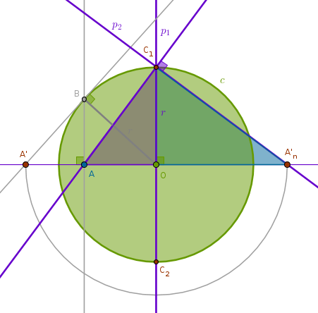
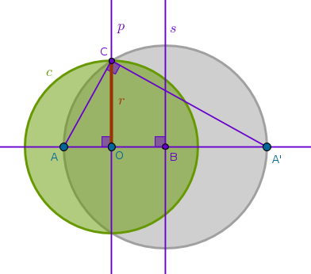

Property ICP1
Under the inversion with respect to a circle \(c(O, r)\) with positive power any point \(A\) on \(c\) is transformed into itself
Such points are called fixed. From ICC3 for any point \(A\) on \(c\) we have:
$$OA \times OA' = r^2$$ $$OA = r$$ $$r \times OA' = r^2$$ $$OA' = r$$From the above and ICC2 it follows that \(A'\) does coincide with \(A\).
Property ICP2
Under the inversion with respect to a circle \(c(O, r)\) with negative power any point \(A\) on \(c\) is transformed into a point on \(c\) diametrically opposite to \(A\)
From ICC3 for any point \(A\) on \(c\) we have:
$$OA \times OA' = r^2$$ $$OA = r$$ $$r \times OA' = r^2$$ $$OA' = r$$Since all three points must be collinear and \(O\) must be between \(A\) and \(A'\), it follows that \(A'\) is located on \(c\) diametrically opposite to \(A\).
Property ICP3
Under the inversion with respect to a circle \(c(O, r)\) the circle of inversion is transformed into itself
Such figures are called invariant and such transformations are called identity transformations. This property is common for inversions with negative and positive powers and it follows directly from ICP1 and ICP2.
Property ICP4
Under the inversion with respect to a circle \(c(O, r)\) a point \(A\) inside \(c\) different from \(O\) is transformed into a point \(A'\) outside \(c\)
For any point \(A\) inside \(c\) from ICC3 we have:
$$OA \times OA' = r^2$$ $$OA < r$$ $$OA' = \frac {r^2}{OA} > \frac {r^2}{r} = r$$ $$OA' > r$$
Exercise ICE1
Given a circle of inversion \(c(O, r)\) and a point \(A\) inside \(c\) different from \(O\) construct \(A\)'s inverse with respect to \(c\) with positive power
1) Line(\(O\), \(A\))
2) Perpendicular \(p_1\) to Line(\(O\), \(A\)) through \(A\) until it intersects \(c\) at \(B\)
3) Line(\(O\), \(B\))
4) Perpendicular \(p_2\) to Line(\(O\), \(B\)) through \(B\) until it intersects Line(\(O\), \(A\)) at \(A'\):
By construction \(\triangle OAB\) and \(\triangle OBA'\) are right and Line(\(A\), \(B\)) is a perpendicular drawn from the right angle at \(B\) to the base \(OA'\). From B6P8 it follows then that these triangles are similar and in similar triangles the corresponding sides about the equal angles are in the same proportion (B6P4):
$$\frac {OA}{OB} = \frac {OB}{OA'}$$ $$OB = r$$ $$OA \times OA' = r^2$$
Exercise ICE2
Given a circle of inversion \(c(O, r)\) and a point \(A\) inside \(c\) different from \(O\) construct \(A\)'s inverse with respect to \(c\) with negative power
1) Line(\(O\), \(A\))
2) Perpendicular \(p_1\) to Line(\(O\), \(A\)) through \(O\) until it intersects \(c\) at \(C_1\) and \(C_2\)
3) Line(\(A\), \(C_1\))
4) Perpendicular \(p_2\) to Line(\(A\), \(C_1\)) through \(C_1\) until it intersects Line(\(O\), \(A\)) at \(A'_n\):
By construction \(\triangle AC_1A'_n\) is right and \(p_1\) is a perpendicular drawn from the right angle at \(C_1\) to the base \(AA'_n\). From B6P8 it follows then that \(\triangle AOC_1\) and \(\triangle C_1OA'_n\) are similar and in similar triangles the corresponding sides about the equal angles are in the same proportion (B6P4):
$$\frac {OA}{OC_1} = \frac {OC_1}{OA'_n}$$ $$OC_1 = r$$ $${OA} \times {OA'_n} = r^2$$The construction of a point \(A'\) as an inverse image of \(A\) with respect to \(c\) with positive power that we have added in this drawing will be used shortly.
Property ICP5
Under the inversion with respect to a circle \(c(O, r)\) a point \(A\) outside \(c\) different from \(P_{\infty}\) is transformed into a point \(A'\) inside \(c\) other than \(O\)
For any point \(A\) outside \(c\) from ICC3 we have:
$$OA \times OA' = r^2$$ $$OA > r$$ $$OA' = \frac {r^2}{OA} < \frac {r^2}{r} = r$$ $$OA' < r$$
Exercise ICE3
Given a circle of inversion \(c(O, r)\) and a point \(A\) outside \(c\) different from \(P_{\infty}\) construct \(A\)'s inverse with respect to \(c\) with positive power
Here we have to reconstruct a tangent to a circle (\(c\)) through a point (\(A\)):
1) Line(\(O\), \(A\))
2) LineSegment(\(O\), \(A\)) bisector \(s\) to locate \(B\): \(BA = BO\)
3) Circle(\(B\), \(BO = BA\)) until it intersects \(c(O, r)\) at \(D\)
4) Perpendicular \(p\) to Line(\(O\), \(A\)) through \(D\) to locate \(A'\):
From B3P31, in a circle the angle in the semicircle is right, it follows that \(\angle ODA\) is right by construction. And \(p\) is a perpendicular drawn from the right angle at \(D\) to the base \(OA\). From B6P8 it follows then that \(\triangle ODA\) and \(\triangle OA'D\) are similar and in similar triangles the corresponding sides about the equal angles are in the same proportion (B6P4):
$$\frac {OA}{OD} = \frac {OD}{OA'}$$ $$OA \times OA' = OD^2 = r^2$$
Exercise ICE4
Given a circle of inversion \(c(O, r)\) and a point \(A\) outside \(c\) different from \(P_{\infty}\) construct \(A\)'s inverse with respect to \(c\) with negative power
1) Line(\(O\), \(A\))
2) Perpendicular \(p_1\) to Line(\(O\), \(A\)) through \(O\) to locate \(B\): \(OB = r\)
3) Perpendicular \(p_2\) to Line(\(A\), \(B\)) through \(B\) to locate \(A'_n\):
By construction \(\triangle ABA'_n\) is right and \(p_1\) is a perpendicular drawn from the right angle at \(B\) to the base \(AA'_n\). From B6P8 it follows then that \(\triangle BOA\) and \(\triangle A'_nOB\) are similar and in similar triangles the corresponding sides about the equal angles are in the same proportion (B6P4):
$$\frac {OA}{OB} = \frac {OB}{OA'_n}$$ $$OA \times OA'_n = OB^2 = r^2$$The construction of a point \(A'\) as an inverse image of \(A\) with respect to \(c\) with positive power that we have added in this drawing will be used shortly.
Exercise ICE5
Given two distinct points \(A\) and \(A'\) that are inverses of each other with respect to a circle with a given radius \(r\) locate the center of inversion \(O\) with positive power
From ICC3 we have (\(OA = x\) and \(AA' = a\)):
$$x(x + a) = r^2$$ $$x^2 + ax - r^2 = 0$$ $$x_{1, 2} = \pm \sqrt {\Big(\frac {a}{2}\Big)^2 + r^2} - \frac {a}{2}$$ $$x_{1, 2} + \frac {a}{2} = \pm \sqrt {\Big(\frac {a}{2}\Big)^2 + r^2}$$We see that the square root on the right hand side of the equation is the hypotenuse of a right triangle with known sides which suggests the following construction:
1) Line(\(A\), \(A'\))
2) LineSegment(\(A\), \(A'\)) perpendicular bisector \(s\) to locate \(B\): \(BA = BA'\)
3) Perpendicular \(p\) to Line(\(A\), \(A'\)) through \(A\) (or \(A'\))
4) Circle(\(A\), \(r\)) until it intersects \(p\) to locate \(D\): \(AD = r\)
5) Circle(\(B\), \(BD\)) until it intersects Line(\(A\), \(A'\)) to locate \(O\) and \(O'\):
Exercise ICE6
Given two distinct points \(A\) and \(A'\) that are inverses of each other with respect to a circle with a given radius \(r\) locate the center of inversion \(O\) with negative power
From ICC3 we have (\(OA = x\) and \(AA' = a\)):
$$x(a - x) = r^2$$ $$x^2 - ax + r^2 = 0$$ $$x_{1,2} = \frac {a}{2} \pm \sqrt {\Big(\frac {a}{2}\Big)^2 - r^2}$$We see that the square root on the right hand side of the equation is a side of a right triangle with a known side \(r\) and a known hypotenuse \(\frac {a}{2}\) which suggests the following construction:
1) Line(\(A\), \(A'\))
2) LineSegment(\(A\), \(A'\)) bisector \(s\) to locate \(B\): \(BA = BA'\)
3) Circle(\(B\), \(BA = BA'\))
4) Circle(\(B\), \(r\)) until it intersects \(s\) at \(C\)
5) Perpendicular \(p_1\) to \(s\) through \(C\) until it intersects Circle(\(B\), \(BA = BA'\)) at \(D\) and \(E\)
6) Perpendiculars to Line(\(A\), \(A'\)): \(p_2\) through \(D\) until it intersects Line(\(A\), \(A'\)) at \(O\) and \(p_3\) through \(E\) until it intersects Line(\(A\), \(A'\)) at \(O'\):
Exercise ICE7
Given two distinct points \(A\) and \(A'\) that are inverses of each other with respect to a circle with a given center \(O\) construct the radius of inversion \(r\) with positive power
To construct the radius of inversion we can change the steps of ICE5 just a bit but there is a simpler way which is based on ICE1:
1) Line(\(O\), \(A'\))
2) LineSegment(\(O\), \(A'\)) bisector \(s\) to locate \(B\): \(BO = BA'\)
3) Circle(\(B\), \(BO = BA'\))
4) Perpendicular \(p\) to Line(\(O\), \(A'\)) through \(A\) until it intersects Circle(\(B\), \(BO = BA'\)) to locate \(C\)
5) \(OC = r\):
Exercise ICE8
Given two distinct points \(A\) and \(A'\) that are inverses of each other with respect to a circle with a given center \(O\) construct the radius of inversion \(r\) with negative power
Again, to construct the radius of inversion we can change the steps of ICE6 just a bit but there is a simpler way which is based on ICE2:
1) Line(\(A\), \(A'\))
2) LineSegment(\(A\), \(A'\)) bisector \(s\) to locate \(B\): \(BA = BA'\)
3) Circle(\(B\), \(BA = BA'\))
4) Perpendicular \(p\) to Line(\(A\), \(A'\)) through \(O\) until it intersects Circle(\(B\), \(BA = BA'\)) to locate \(C\)
5) \(OC = r\):

Property ICP6
A point \(A'\) inverse to a point \(A\) under the inversion with respect to a circle \(c(O, r)\) is unique
This follows directly from ICC3. Algebraically, if we put \(x = OA'\) and take that \(r^2 = const\) and \(OA\) as known, we obtain:
$$x = \frac {r^2}{OA}$$a first degree equation yielding a unique solution.
Property ICP7
Under the inversion with respect to a circle \(c(O, r)\) an even number of inversions of a point \(A\) with respect to \(c\) transforms \(A\) into itself
Two consecutive inversions is all we need to look at. Assume that \(A\) is inverted into \(A'\) and \(A'\) is inverted into \(A''\) with respect to \(c\). From ICC3 we have:
$$OA \times OA' = r^2$$ $$OA' \times OA'' = r^2$$Since \(A'\) is unique (ICP6) and \(OA'\) is one and the same:
$$\frac {r^2}{OA} = \frac {r^2}{OA''}$$ $$OA = OA''$$and since all three points are collinear (ICC2), \(A''\) must coincide with \(A\).
Another way to look at this property is to state that:
"if a point \(A'\) is the inverse of a point \(A\) under the inversion with respect to a circle \(c\) then \(A\) is the inverse of \(A'\) with respect to \(c\)"
Property ICP8
An inversion with respect to a circle \(c(O, r)\) with negative power is equivalent to an inversion with respect to the same circle \(c\) with positive power with a consequent \(180\)-degree rotation about \(O\), and conversely
Inverting \(A\) with respect to \(c\) with positive power puts \(A'\) on the same side of \(O\) while inverting \(A\) with respect to \(c\) with negative power puts \(A'_n\) on the opposite side of \(O\). From the previous properties it follows then that regardless of where \(A\) is in reference to \(c\) (in, on, out) we have:
$$OA \times OA' = r^2 = OA \times OA'_n$$ $$OA' = OA'_n$$The ICE2 and ICE4 drawings demonstrate this idea.
Since the inversions with positive and negative power are equivalent in the above sense, we can exploit this fact to our advantage by choosing the most convenient inversion type to derive a proof or a solution to a problem and then claim the same for the remaining inversion type.
\(\blacksquare\)